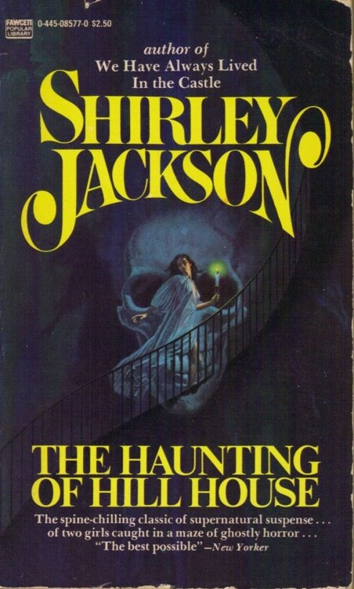

EL ESTANTE COMÚN
Detalles del libro
|
 |
La maldición de Hill Housepor Shirley Jackson SINOPSISLa maldición de Hill House (The Haunting of Hill House, 1959), considerada una de las principales novelas de horror del siglo XX, narra el inquietante experimento de John Montague, doctor en Filosofía y antropólogo, que lleva años entregado al estudio de «las perturbaciones psíquicas» que suelen manifestarse en las «casas encantadas». Infructuosamente ha buscado una casa idónea, cuando un día oye hablar de Hill House, una mansión solitaria y de siniestra reputación. Montague decide alquilarla y busca ayudantes dispuestos a pasar una temporada en ella: Eleanor, una mujer desdichada que, tras once años cuidando a su arisca madre inválida, se ha vuelto una persona solitaria; Theodora, joven alegre y curiosa, seleccionada por su increíble capacidad telepática; y Luke, vividor y mentiroso, incluido en el grupo por exigencia de la propietaria, su tía. El objetivo: tomar notas de cualquier fenómeno paranormal que se presente para documentar el libro sobre casas encantadas que prepara el doctor. Las alucinantes experiencias que vivirán en la casa será mejor que el lector las descubra por sí mismo. |
CALIFICACIONES
9/10
PALABRAS CLAVE
Horror, Gótico, Misterio, Paranormal